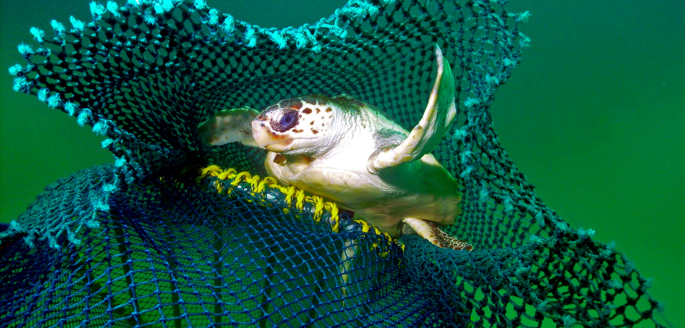
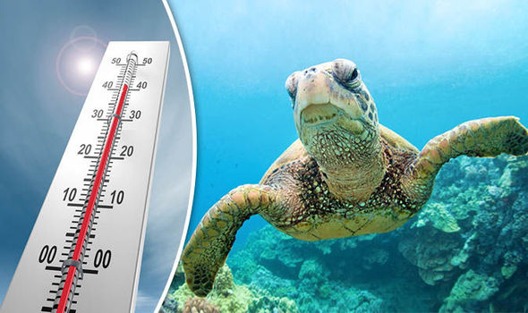
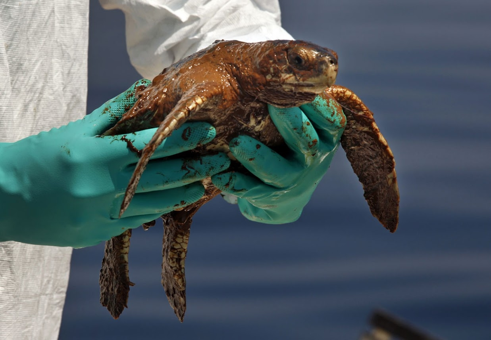

|
Although sea turtles are revered in many cultures throughout the world for their mythological or spiritual significance, this hasn't stopped people from eating their eggs or flesh.
Sea turtles have served as a source of food for many coastal cultures, particularly in Central America and Asia.
Turtle hunters search the beaches at night during the nesting season in search of nesting females.
|
|
Since ancient times, hawksbill sea turtles have been hunted for their exquisite gold and brown shells, which are used to make jewelry and other high-end goods.
These turtles are now classified as severely endangered as a result. Hawksbill numbers are thought to have decreased by 90% during the previous 100 years, according to scientists.
Although illicit trading is the main reason for this reduction, there is still a need for shells on the black market today.
|
 |
|  |
Every year, thousands of adult and young sea turtles are captured by small-scale fisherman in global waters.
Estimates of yearly capture, damage, and death are staggering, with 150,000 turtles murdered in shrimp trawls, 200,000 hurt or killed by longlines, and many more dying in gill nets.
|
|
The effects of climate change are anticipated to have a disastrous effect on sea turtles since they utilise both marine and terrestrial behaviors throughout their life cycles.
Nesting beaches are impacted by climate change. Beaches are beginning to disappear as a result of melting polar ice caps and increasing sea levels.
|
 |
|  |
Marine pollution, such as oil spills and urban runoff from chemicals, fertilizers, and petroleum, can have a serious impact on sea turtles and their food. Pollution can kill aquatic plant and animal life when it enters the ocean, and as the pollutants degrade in size, the poisons released become more concentrated. As a result, numerous links in the food chain, including sea turtles, eat these tiny, more deadly particles. |